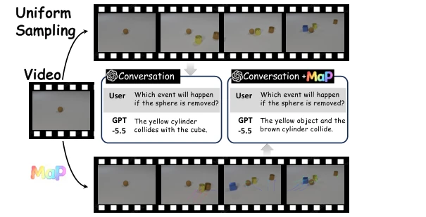
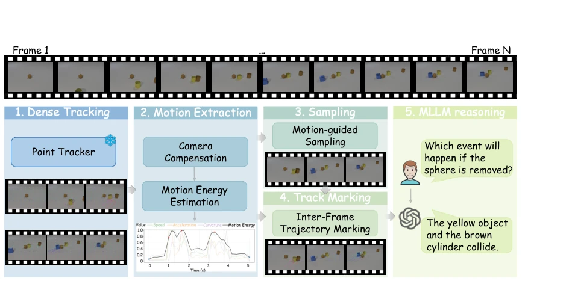
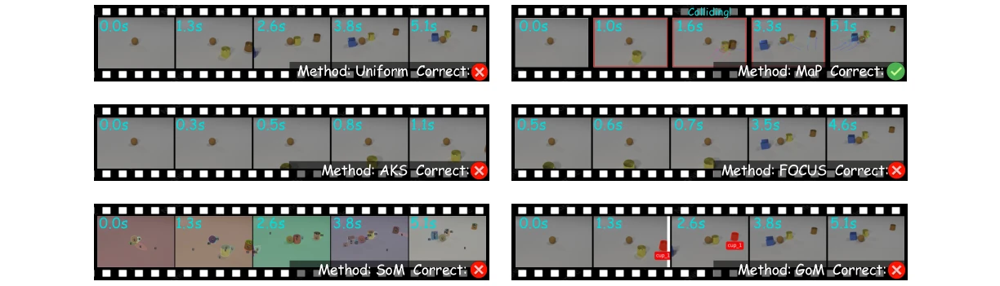
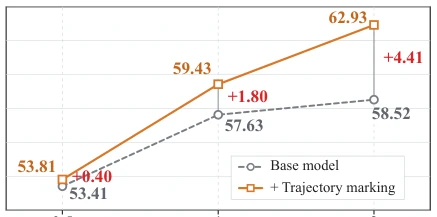
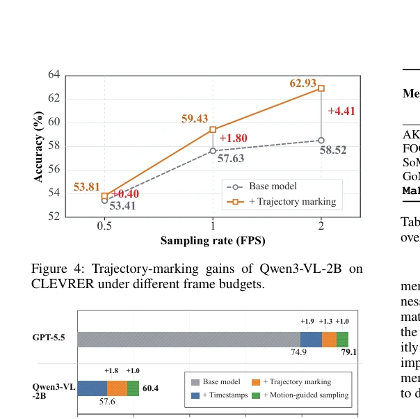

This paper performs a "surgery" on the video understanding of MLLMs, but does not touch the model itself. The authors keenly point out that MLLMs, in order to save tokens, employ sparse sampling, resulting in objects "teleporting," where collisions and trajectory changes disappear directly. The MaP scheme is quite interesting, equivalent to giving the model a pair of "motion glasses," using a frozen point tracker to draw the lost trajectories onto keyframes. The benefits are training-free and model-agnostic, usable with GPT-5.5 and Qwen3-VL, with significant performance improvements. But the drawbacks are also obvious: it relies on an external tracker (CoTracker3); if the tracker fails, MaP is blinded; moreover, this "drawing lines" method might interfere with model attention in extremely complex scenes. Overall, it is a high cost-performance "external plugin," suitable for teams that do not want to change the architecture but want to improve motion reasoning, but do not expect it to solve all long video understanding problems, after all, it just feeds data more intelligently, rather than making the model smarter.
研究动机Motivation
核心痛点是“帧间运动丢失”（inter-frame motion loss）。MLLM 通常为了控制视觉 token 和注意力成本，对视频进行稀疏均匀采样（Shen et al. 2024）。这导致连续运动被切成孤立快照，中间的碰撞、方向改变等关键信息丢失。现有方法要么依赖架构修改（Li et al. 2025a），要么用基于语义的关键帧选择（AKS, FOCUS），但这些往往忽略动态变化。视觉提示（Visual Prompting）如 SoM（Yang et al. 2023）和 GoM（Frisoni et al. 2026）虽然有效，但主要是帧内语义标注（物体位置、关系），无法揭示未采样间隔内的跨帧运动。MaP 旨在通过视觉提示恢复这些丢失的跨帧证据，让冻结的 MLLM 能直接“看见”运动轨迹，而非仅靠猜测。
The core pain point is "inter-frame motion loss". MLLMs typically perform sparse uniform sampling on videos (Shen et al. 2024) to control visual token and attention costs. This leads to continuous motion being cut into isolated snapshots, losing key information such as collisions and direction changes in between. Existing methods either rely on architecture modifications (Li et al. 2025a) or use semantic-based keyframe selection (AKS, FOCUS), but these often ignore dynamic changes. Visual Prompting methods such as SoM (Yang et al. 2023) and GoM (Frisoni et al. 2026), although effective, are mainly intra-frame semantic annotations (object positions, relationships) and cannot reveal inter-frame motion within unsampled intervals. MaP aims to recover these lost inter-frame evidence through visual prompts, allowing the frozen MLLM to directly "see" motion trajectories, rather than relying solely on guessing.

Figure 1: Illustration of inter-frame motion loss and its re- covery with MaP. Uniform sampling retains disconnected snapshots, while MaP makes the missing motion observable.
MaP is a training-free, plug-and-play framework, with the overall process divided into four steps. First, utilize a frozen point tracker (CoTracker3) to recover dense point trajectories on full-frame-rate videos, and compensate for camera motion via global similarity transform to extract pure object velocity. Second, calculate the motion energy of each frame, integrating velocity, acceleration, and curvature dimensions to quantify motion intensity. Next, perform Motion-Guided Sampling based on motion energy, under a fixed frame budget, retaining anchor frames for global coverage while selecting high-energy motion peak frames via Non-Maximum Suppression (NMS). Finally, and the core innovation, perform Inter-Frame Trajectory Marking. On selected keyframes, render accumulated trajectory segments between adjacent sampled frames as visible polyline markers, directly superimposed on the image. Thus, displacements and direction changes originally hidden within sampling intervals become visual prompts visible to the MLLM. The entire process does not modify model weights, only enhancing motion perception through preprocessing visual input.

Figure 2: Overview of MaP. Given a full-frame-rate video, MaP first recovers dense point trajectories using a frozen point tracker. It then compensates for global camera motion, estimates frame-wise motion energy, and selects motion-informative frames under a fixed frame budget. Finally, trajectory segments accumulated between consecutive sampled frames are rendered onto the later frames and provided to the frozen MLLM for motion-aware reasoning.
Tested on two motion reasoning benchmarks, CLEVRER and Something-Something-v2, comparing baselines such as uniform sampling, AKS, FOCUS, SoM, and GoM. Table 1 shows that MaP improves average accuracy by 4.2% to 8.9% on GPT-5.5, and also has stable gains on Qwen3-VL-2B. Especially in the collision reasoning task of CLEVRER, MaP is significantly better than AKS and FOCUS that rely on semantic selection. On TempCompass non-motion tasks, Table 2 shows MaP causes no performance drop, proving its robustness. Ablation studies indicate that inter-frame trajectory marking is the main source of performance improvement, and the marking effect is better as frame budget increases. Regarding preprocessing overhead, Table 3 shows MaP is much faster than pixel-level prompting methods (SoM, GoM), with lower memory usage, possessing practical value.

Figure 3: Qualitative comparison on a 5.1-second CLEVRER video sampled at 1 FPS (i.e., five-frame budget). Red boxes highlight the keyframes selected by MaP’s motion-guided sampler.

Figure 4: Trajectory-marking gains of Qwen3-VL-2B on CLEVRER under different frame budgets.

Figure 5: Cumulative ablation of timestamps, trajectory marking, and motion-guided sampling on CLEVRER.